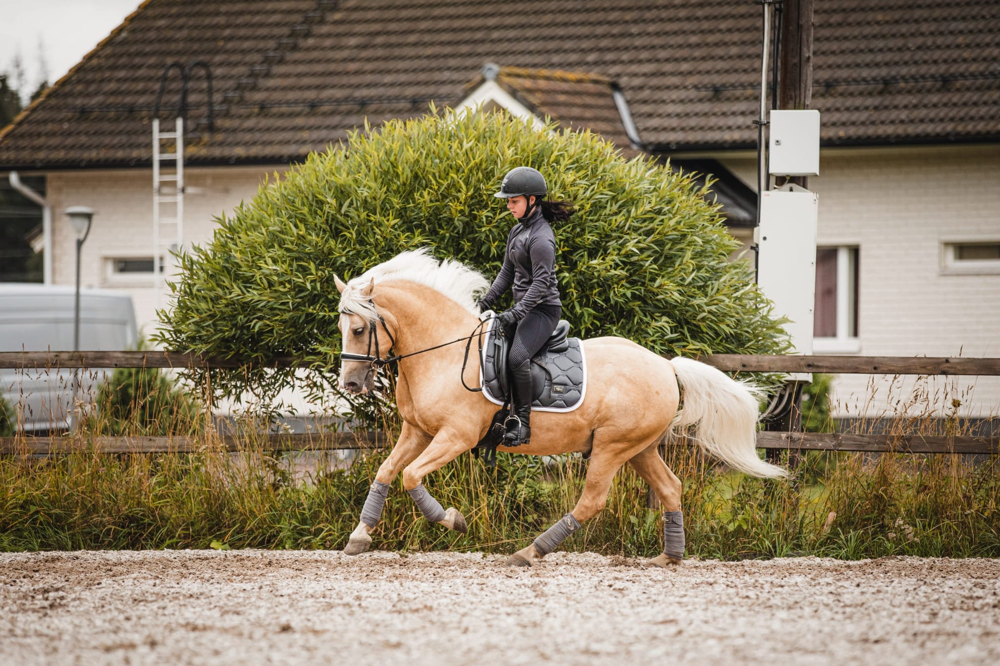
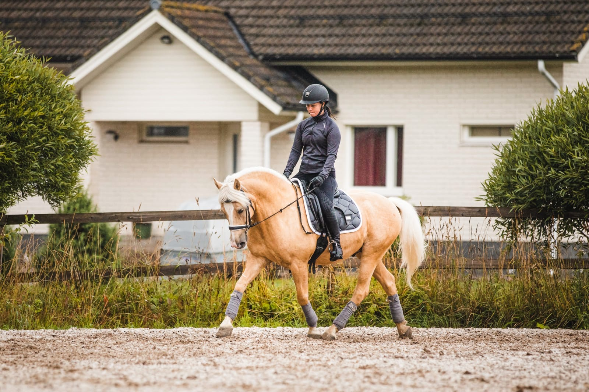

Kouluratsastusta voisi verrata klassiseen balettiin. Hevonen liikkuu notkeasti,
joustavasti ja jäntevästi ratsastajan ohjatessa sitä pehmein, huomaamattomin avuin. Parhaimmillaan
ratsukon eli hevosen ja ratsastajan välinen yhteistyö on niin saumatonta, että hevonen näyttää
suorittavan liikkeet vain ajatuksen voimalla.
Kilpailuissa tuomarit arvostelevat mm. hevosen liikkeitä, suorituksen täsmällisyyttä ja ratsastajan
apujen käyttöä pistein 0-10. Tulos muodostuu suorituskokonaisuuksien yhteenlasketuista pisteistä.
Kilpailurata on tasainen hiekka- tai nurmikenttä, kooltaan 20 x 40 metriä tai 20 x 60 metriä.
Kilpailuohjelmia on helpoista luokista grand prix -tasolle.

Perinteisten ohjelmien lisäksi ratsastetaan vapaaohjelmia musiikin tahdissa (kür)
eri
vaikeustasoilla. Ratsastaja suunnittelee itse ohjelmansa ja valitsee siihen musiikin, myös musiikin
sopivuus
sekä hevosen liikkeisiin että koreografiaan arvostellaan.
Maamme menestynein kouluratsastaja on Kyra Kyrklund. Hän on osallistunut olympialaisiin kuusi kertaa
sijoittuen Soulissa viidenneksi Matadorilla sekä samalle sijalle Barcelonassa Edinburgilla ja
Moskovassa
Piccololla. Pekingin olympialaisissa hän oli Maxilla kahdeksas. Matadorilla Kyra voitti MM-hopeaa
Tukholmassa 1990 ja maailmancupin finaalin Pariisissa 1991.